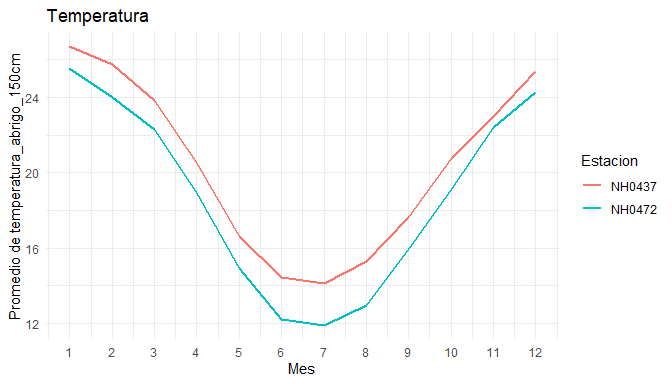

climatech permite descargar, resumir y graficar datos de estaciones meteorologicas. Por defecto trabaja con datos de estaciones del Instituto Nacional de Tecnologia Agropecuaria (INTA), disponibles en el Sistema de Informacion y Gestion Agrometeorologica (SIGA).
Con climatech podes:
- descargar y leer los datos de una estacion con
leer_dataset(); - obtener un resumen mensual de cualquier variable numerica, para una o varias estaciones, con
tabla_resumen(); - graficar el promedio mensual de una variable numerica con
graf_prom_mensual().
El paquete incluye ademas datos_estaciones, un conjunto de datos de ejemplo con mediciones diarias de dos estaciones del INTA en Santa Fe, para probar las funciones sin descargar nada.
climatech fue desarrollado como trabajo practico de la materia Programacion II de la Licenciatura en Ciencia de Datos (Universidad Austral). Es un paquete de practica y no esta pensado para usarse en analisis reales.
Instalacion
Podes instalar la version en desarrollo de climatech desde GitHub con:
# install.packages("pak")
pak::pak("moravilar/climatech")Ejemplo de uso
Resumen mensual de la temperatura para cada estacion de los datos de ejemplo:
tabla_resumen(datos_estaciones, por_estacion = TRUE)
#> Hay 1 valor(es) faltante(s) (`NA`) en "temperatura_abrigo_150cm", que no se
#> usa(n) en los calculos.
#> # A tibble: 120 × 4
#> id mes estadistico valor
#> <chr> <dbl> <chr> <dbl>
#> 1 NH0437 1 media 26.7
#> 2 NH0437 1 desvio 2.79
#> 3 NH0437 1 q1 25.0
#> 4 NH0437 1 mediana 26.8
#> 5 NH0437 1 q3 28.5
#> 6 NH0437 2 media 25.8
#> 7 NH0437 2 desvio 3.07
#> 8 NH0437 2 q1 23.8
#> 9 NH0437 2 mediana 25.6
#> 10 NH0437 2 q3 27.6
#> # ℹ 110 more rowsPromedio mensual de la temperatura, con una linea para cada estacion:
graf_prom_mensual(datos_estaciones, por_estacion = TRUE)
#> Valores faltantes (NA) ignorados en temperatura_abrigo_150cm: 1.
Para descargar los datos de otra estacion, se indica su identificador y la ruta donde guardar el archivo:
nh0098 <- leer_dataset("NH0098", ruta = "datos/NH0098.csv")Para ver el uso completo de las funciones, consulta la vineta del paquete:
vignette("climatech")